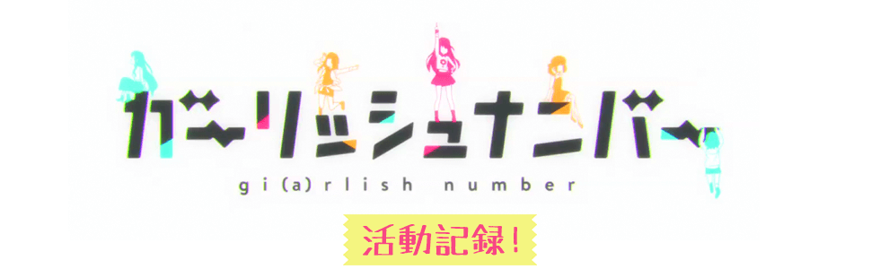

TVアニメ『九龍覇王と千年皇女』
OP/EDテーマを歌う新ユニット
『ガーリッシュ ナンバー』座談会を公開！
■TVアニメ『九龍覇王と千年皇女（ルビ：ミレニアムスレイブ）』（以下『クースレ』）のOP/EDテーマを歌うアイドル声優ユニット「ガーリッシュ ナンバー」の結成が発表された。アニメに出演すると同時にユニットのメンバーともなった、千歳烏丸 烏丸千歳、久我山八重、片倉京、苑生百花、柴崎万葉の五人に、今の想いを聞いた。
――アイドル声優ユニット「ガーリッシュ ナンバー」のメンバーに決まり、最初聞かされたときのお気持ちや、今後レコーディングに臨むにあたっての意気込みを伺えますか。
久我山 「え、えと！ やっぱりすごくドキドキして、身体がふわーっとして、もうなんだろ、あの、あ、あの、すっごくがんばらなきゃなーって気持ちにすっごくすっごくなりました！」
烏丸千歳 「八重らしいコメントだなあ……。わたしも八重と同じ気持ちです！(笑)」
片倉 「うちは歌とか唄えるのかなあってえらい不安だったですけど、たまたま一緒に発表聞いたちーさまが余裕綽々で、ちょっと助けられました」
苑生 「あー。千歳、そういうとこあるわよね（笑）」
烏丸千歳 「そうかなあ……」
苑生 「目に浮かぶようだわ。結構真似しやすいタイプかもね（笑）」
烏丸千歳 「そんなことないよぉ（笑）機械みんなの力がなければなんにもできないよぉ！ あ、これは八重の真似ですね」
久我山 「ちーちゃん！？（笑）」
苑生 「あたし個人は今までもユニットを組むことはありましたが、５人という人数は新鮮で、違う世界が見られることにわくわくしています。今までのファンの方にも、今回初めて知ってくださったファンの方にも、新しい百花をお届けできればいいなって思っています！ えっと……、柴崎万葉ちゃんは？」
柴崎 「……どんなときも与えられた仕事をきちんとこなしていきたいと思っていますし、今回もその気持ちは変わりません！」
――先日開催された、TVアニメ『クースレ』キックオフイベントに登壇されて、いかがでしたか？
烏丸千歳 「人がいっぱいいて、やっぱりすごくドキドキして、身体がふわーっとして、もうなんだろ、あの、あ、あの、すっごくがんばらなきゃなーって気持ちにすっごくすっごくなりました！」
久我山 「ちーちゃん！！？？（笑）」
片倉 「でも実際、うちとやえぽんは死ぬほど緊張してたけど、ちーさまは終始落ち着いていたイメージあるなあ。場馴れしてるっちゅうか」
苑生 「あれは天性のものよね」
烏丸千歳 「えへへ、照れるなあ……」
柴崎 「必ずしも褒め言葉じゃないでしょうけれど」
烏丸千歳 「ん？」
久我山 「あっ、本当私緊張しちゃってて、ステージ上のことはなにも覚えてなかったぐらいなんですけど！ あとからPV見返したら、本当によくできてるなってすっごく感動しました！」
片倉 「あれなぁ。松澤さんの絵がもともとえらい好きなんですけど、今回のPVはその代名詞である静と動の切り替わりが一際印象強いカット割りされてて、タメとキメがほんまかっこええというか尊いというかほんまありがとうって気持ちでいつもの松澤さんだって思うと同時に、少し違うステージに行ったのかなとも思いました。今までもキャラクターが躍動するところでの感情の描き方はピカイチだったんですけど、今回はPVということでキャラクター紹介によった演出で、なおこんなインパクトある絵が描けるんだなって。動かし方の特徴はほんま健在なんですけどひょっとしたら以前にメインでやられはった『漆黒のディオメディオン』の影響が……、しゃべりすぎましたすみません……感動しました！」
烏丸千歳 「…………（笑）京ちゃんはアニメ大好きなんだよね！」
――最後に、お一人ずつ、ファンの方々に向けたコメントをいただけますか。
烏丸千歳 「じゃあ、八重から」
久我山 「ふえっ！？ え、あ、ひゃい！ あの、あ、あの、すごくドキドキして、すっごくその、えと、すっごくすっごくがんばります！！」
柴崎 「自分のベストをつくします」
片倉 「やれることは全部やって、食らいついてでもがんばります。年齢的にもラスト神様が与えてくれたチャンスかもしれないですし（笑）冗談ですけど（笑）」
苑生 「キックオフイベントでは、たくさんのファンの方々に来ていただいて、身の引き締まる思いがしました。皆様のご期待に応えられるよう、精いっぱい演じ、精いっぱい歌います！」
烏丸千歳 「そんな感じで個性豊かな面々が勢ぞろいしたガーリッシュ ナンバー、ぜひぜひよろしくお願いします！」
苑生 「なんであんた千歳が締めるのよ……（笑）」
修正：烏丸悟浄